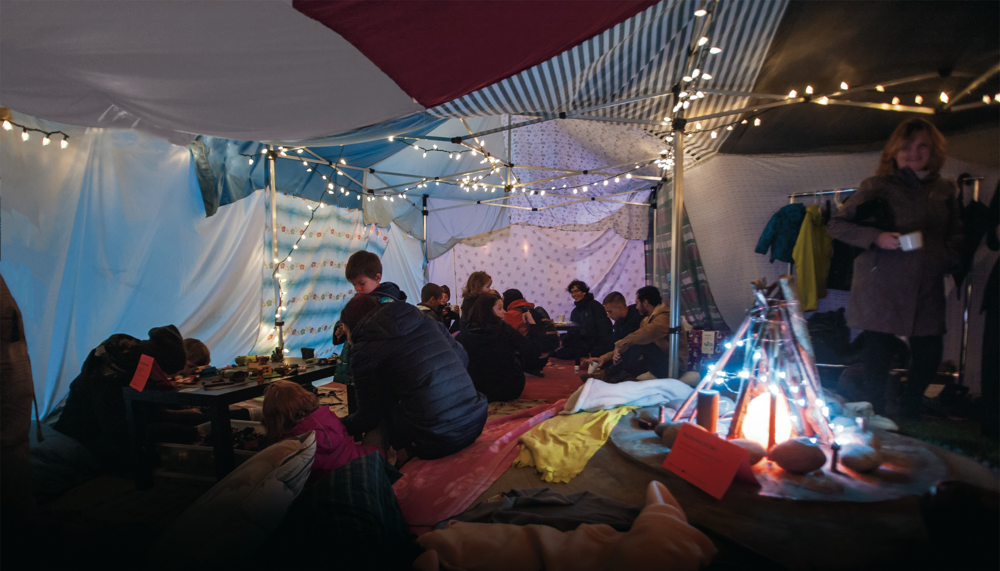

P03 Porfolio Mischa Price
Portfolio StylesheetPortfolio Content
Bio
My name is Mischa Price and I am a third year student at the SFU School of Interactive Arts and Technology . I am studying UI/UX as well as graphic design. I am always looking to explore how design can make lives better, especially in regards to sustainability and cities. Bringing technology and design to nature and society is my north star. I’m also an avid fan of transportation, musicals and the outdoors.
Project Discription
View To Launch
UI design, User study, Graphic Design, Prototyping back to top ^

Project summary
View to launch was an interactive prototype designed for the SFU satellite design club
The problem
We were tasked with studying a specific user group to discover their pain points and design a custom solution.
Background research
We interviewed, created cultural design problems and ran a creative workshop with the team. We discovered the team struggles to empower new members into their highly technical work flow.
Initial ideas
Our first idea was a type of social network or messaging app to allow members to chat and stay connected, but decided it wouldn’t offer benefits and the team was already using slack messaging.
Iterations
Moving forward we came up with the idea for a collaborative task application, to manager work flow and make it easy for new members to find things to do. On top of this we wanted to design a dashboard UI that could be displayed to promote the club and bring new members to the club.
Final form
We produced an interactive display using HTML, CSS and Java Script. Allowing any web connected touch display to act as a window into the clubs working. This was complimented with the tasks application, which was made as an interactive prototype.
Main take aways
Working with real clients really helped me see where the design opportunities were. I started seeing problems that the club had that members weren’t able to express when interviewed.
back to top ^


Connect Fort
Techical Design, Interaction Design, Public Engagement , Project Coordination, Graphic Design, Layout, Logo design back to top ^
Project summary
Connect fort was a large scale public blanket fort designed to be a inclusive space for people to meet and connect. It was a one day pop-up as part of the CityStudio and Viva Vancouver event Bridge Warming and saw over 400 guests come through. After our event I designed the poster and report for the project.
The problem
To put on the event our cohort was split into teams each taking a different big bucket theme, my group's being "gathering". We had 8 weeks to ideate, design and build our project.
Background research
We started looking around at what others had done in the space of public space events, and tried to find out why we all were drawn to gathering as a theme. We then started contacting stockholders in the community such as the Vancouver Police Department and neighbourhood association to get their feedback.
Initial ideas
Our initial ideas were a Blanket Fort, a campfire spot, and a hot chocolate social. These ideas all incorporated a draw and reason to stay.
Iterations
The actual fire concept was quickly deemed a logistical nightmare, and the heart of the hot chocolate idea didn’t align with our zero waste goals. We began to focus in on what could be inside a blanket fort and how it could serve the community.
Final form
Our final form was a roughly 450 square foot blanket fort, comprised of 3 borrowed pop-up tent frames and several dozen donated blankets sewn into a custom cover. Inside we served hot chocolate, while people could sit around our faux fire, or play with the lego or different games we provide. We collected bags of donations for union gospel mission as a way to ensure our project was supporting not just the people in it but other who are struggling in the winter.
Main take aways
Connect Fort was an absolutely inspirational project. Every piece of feedback from community members was positive. I learned a lot about working with other stakeholders and aligning your goals to thrive together.
back to top ^